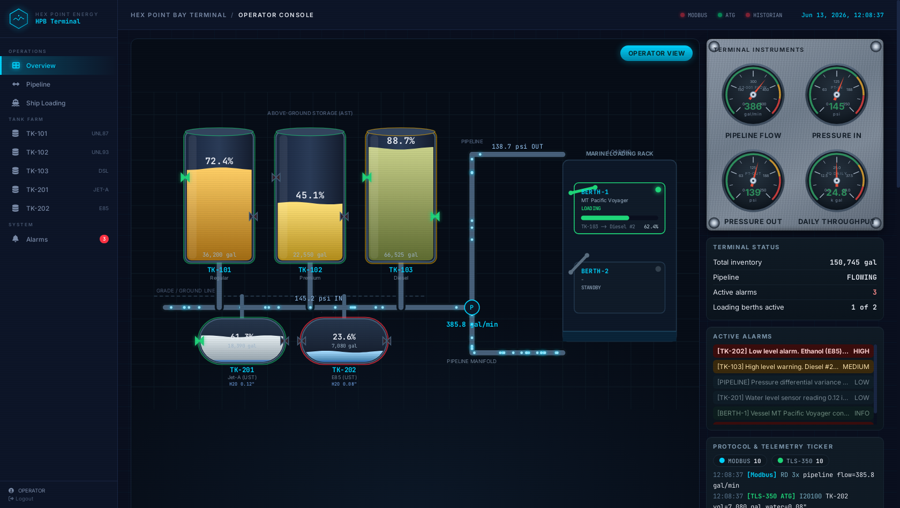
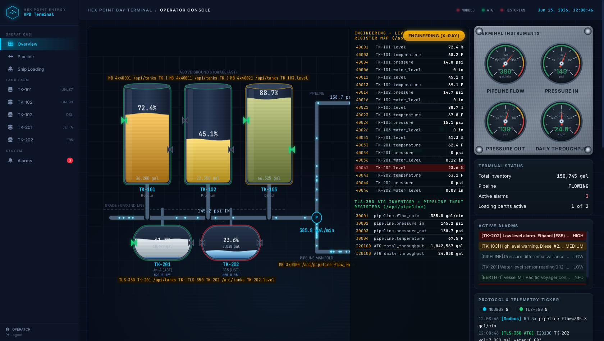

Exercise ICS-1.3: Behind the Dashboard
Engagement Status
Client: Hex Point Energy Solutions Role: Security Intern Phase: Reconnaissance Modbus Enumeration >> HMI Recon << Protocol Exploitation Attack Chains
What you know so far:
- You have mapped all 5 hosts on the OT network (ICS-1.1)
- You have read every register on the PLC: tank levels, valve states, alarms (ICS-1.2)
- The Operator HMI serves a web-based SCADA dashboard over plain HTTP on port 80
- Two flags recovered so far from the .git repository and Modbus registers
Your task: Explore the HMI web interface, discover the unauthenticated API endpoints that feed the operator cockpit, identify the default credentials and the session weaknesses, and locate a flag hidden in the alarm page source.
Objective
Perform a thorough reconnaissance of the Hex Point Bay Terminal operator HMI (Human-Machine Interface). Discover what data the dashboard exposes, identify the API endpoints that serve process data without authentication, and find sensitive information hidden in the application HTML source.
Difficulty: Beginner Estimated time: 20 minutes
Background: SCADA HMI Systems
What Is an HMI?
A Human-Machine Interface (HMI) is the operator window into the industrial process. It displays real-time data from PLCs and sensors, allows operators to send control commands, and alerts them when conditions become abnormal.
Modern HMIs are web-based applications: they replace the dedicated hardware panels and proprietary software of previous decades. The web-based design means they run on standard web servers, speak HTTP, use JavaScript frameworks, and are vulnerable to the same classes of attacks as any other web application.
flowchart LR
OP["Operator"] -->|"Browser"| HMI["HMI Web Server<br/>:80"]
HMI -->|"Modbus TCP<br/>:502"| PLC["PLC"]
HMI -->|"SQL<br/>:5432"| HIST["Historian DB"]
HMI -->|"TLS-350<br/>:10001"| ATG["ATG"]
style OP fill:#1a1a2e,stroke:#6366f1
style HMI fill:#0d3b2e,stroke:#14b8a6
style PLC fill:#0d3b2e,stroke:#14b8a6
style HIST fill:#0d3b2e,stroke:#14b8a6
style ATG fill:#0d3b2e,stroke:#14b8a6Why HMIs Are High-Value Targets
The HMI is the command and control center of the facility. Compromising it gives an attacker:
- Visibility: Real-time and historical views of every process variable
- Control: Ability to send commands to PLCs and change setpoints
- Concealment: Ability to modify what operators see on their screens while the physical process behaves differently (a technique used in the Stuxnet attack)
Common HMI Vulnerabilities
| Vulnerability | Description | Real-World Impact |
|---|---|---|
| Default credentials | Vendor-shipped usernames and passwords that are never changed | Attackers gain full operator access |
| No authentication | API endpoints or pages accessible without login | Process data and controls exposed to anyone on the network |
| Session management flaws | Weak signing secrets, query-parameter auth bypasses, no timeout | Session forgery, unauthorized commands |
| Information disclosure | Debug info, comments, stack traces in HTML source | Internal architecture and credentials leaked |
| Lack of HTTPS | All traffic in plaintext over HTTP | Credential sniffing, session hijacking, MITM |
| CSRF (Cross-Site Request Forgery) | No anti-CSRF tokens on control actions | Attacker tricks operator browser into sending commands |
OWASP for ICS
Many of these vulnerabilities overlap with the OWASP Top 10 for web applications. ICS HMIs often lag years behind standard web security practices. Vendors prioritize functionality and uptime over security patching.
Tools You'll Need
| Tool | Purpose | Example |
|---|---|---|
curl |
HTTP requests and API queries | curl -s http://<hmi>/api/tanks |
| Web browser | Visual inspection of the dashboard | Open the HMI address in the Exercise Network panel |
| Browser DevTools | View page source, network traffic, cookies | F12 or Ctrl+Shift+I |
Where is the HMI?
The Operator HMI listens on plain HTTP, port 80. Use the address shown for the HMI host in the Exercise Network panel. From inside the lab the name hmi.hexpoint.local also resolves. In the commands below, substitute that address wherever you see <hmi>.
Flag Progress
Exercise ICS-1.3 has 1 flag, hidden as an HTML comment in the alarm panel page.
| Flag | Source | Value | Found? |
|---|---|---|---|
| ICS-1.3 | HTML comment on alarm page | ________ |
Flag format: OCR{...}
Solution Walkthrough
Independent Mode
Open the HMI address from the Exercise Network panel in your browser and explore. Try default credentials. Watch the browser network tab while the cockpit loads. Check for API endpoints. Come back to the walkthrough if you get stuck.
Step 1: Browse to the HMI
Open the HMI in your browser, or use curl to fetch the front page. Both / and /dashboard require a login, so an unauthenticated request lands on the operator login page.
Expected Output
The front page is the operator login. The interesting question for a recon engagement is not the login form itself: it is whether every page and every data source behind it is actually gated by that login. As you will see, the data endpoints are not.
Step 2: Try Default Credentials
Fetch the login page, then test common default credentials. In ICS environments default credentials are extremely common.
The form posts username and password to /login. Submit the default operator credentials and watch the response headers. Save the session cookie to a file so you can reuse it later.
Kali
Expected Output
Default Credentials Work
The credentials operator / hpb2024 are accepted. The login returns a 302 redirect to /dashboard and sets a Flask signed session cookie. The cookie has three dot-separated parts: a base64url payload, a timestamp, and an HMAC signature. Decode only the first part (it is not secret, just base64url-encoded JSON):
# take the payload (text before the first dot) from the session cookie value
python3 - <<'PY'
import base64
payload = "eyJ...<payload>" # the part before the first dot
payload += "=" * (-len(payload) % 4)
print(base64.urlsafe_b64decode(payload))
PY
The decoded payload looks like {"logged_in": true, "token": "hpb-operator-<timestamp>", "username": "operator"}. The cookie is signed, so you cannot edit the payload and keep it valid unless you know the signing key. The next steps cover why that signing key is not the protection it looks like.
Weak hardcoded signing key
The server signs sessions with a hardcoded secret key, hpb-operator-console-key-2024, baked straight into the application source. A signed cookie is only as strong as the secret behind it. If that key leaks (and a hardcoded vendor key in source control or a firmware image usually does), an attacker can forge a session with logged_in: true for any username and the server will trust it. Signing without a strong, secret, per-deployment key gives the appearance of security without the substance.
Step 3: Explore the Cockpit Dashboard
Use the saved cookie to load the dashboard.
The /dashboard route renders an immersive operator cockpit: a live HTML5 Canvas mimic of the terminal with animated tanks, the pipeline, and the marine loading berths. It is the polished console an operator stares at all shift.

The recon payoff is not the cockpit chrome: it is where the cockpit gets its numbers. Open the browser DevTools Network tab while the dashboard refreshes and you will see the page polling a set of /api/* endpoints. The cockpit needs a login to render, but the JavaScript behind it pulls process data from API routes that do not. Any host on the OT network can call those same endpoints directly, with no cookie at all. Steps 4 and 5 do exactly that.

Step 4: Discover the Unauthenticated API Endpoints
The cockpit JavaScript consumes several JSON API endpoints. Query them directly with no cookie and confirm they answer anyway. Start with the tank data.
Expected Output
{
"TK-101": {
"capacity": 50000,
"fill_pct": 72.4,
"flow_rate": 125.3,
"id": "TK-101",
"level": 72.4,
"name": "Tank 101",
"pressure": 14.8,
"product": "Regular Unleaded (87)",
"status": "NORMAL",
"temperature": 68.2,
"type": "AST",
"unit": "gal",
"valve_inlet": true,
"valve_outlet": false,
"volume": 36200,
"water_level": 0.0
},
...
}
/api/tanks returns a JSON object keyed by tank id, with one record per tank. The terminal has five tanks:
| Tank | Product | Type | Capacity |
|---|---|---|---|
| TK-101 | Regular Unleaded (87) | AST (above-ground) | 50,000 gal |
| TK-102 | Premium Unleaded (93) | AST (above-ground) | 50,000 gal |
| TK-103 | Diesel #2 | AST (above-ground) | 75,000 gal |
| TK-201 | Jet-A | UST (underground) | 30,000 gal |
| TK-202 | Ethanol (E85) | UST (underground) | 30,000 gal |
Each record carries level, volume (gal), fill_pct, temperature, pressure, flow rate, water level, status, and inlet/outlet valve states. No authentication was required to read any of it. Now query the pipeline endpoint.
Expected Output
{
"daily_throughput": 24830,
"flow_rate": 385.8,
"flow_unit": "gal/min",
"pressure_in": 145.2,
"pressure_out": 138.7,
"pressure_unit": "psi",
"pump_1": true,
"pump_2": true,
"pump_3": false,
"status": "FLOWING",
"temp_unit": "F",
"temperature": 67.5,
"throughput_unit": "gal",
"total_throughput": 1842567,
"valve_bypass": false,
"valve_emergency": false,
"valve_main": true
}
Then the alarm feed, which returns a flat JSON array of alarm objects.
Expected Output
[
{
"acknowledged": false,
"id": 1,
"message": "Low level alarm. Ethanol (E85) below 25%",
"severity": "HIGH",
"source": "TK-202",
"timestamp": "2026-06-13T12:10:06.572595+00:00"
},
{
"acknowledged": false,
"id": 2,
"message": "High level warning. Diesel #2 above 85%",
"severity": "MEDIUM",
"source": "TK-103",
"timestamp": "2026-06-13T11:37:06.572595+00:00"
},
...
]
What This Teaches
The cockpit needs a login, but the data routes behind it do not. The unauthenticated recon surface includes /api/tanks, /api/pipeline, /api/alarms, /api/loading, and /api/status. Together they expose:
- Real-time process data for every tank, the pipeline, and the loading berths
- Alarm history with timestamps and severities
- System status showing which back-end links (Modbus, ATG, historian) are connected
Step 5: Confirm No Authentication on the API
Confirm that the API truly ignores authentication by hitting it with an explicitly empty cookie and parsing the result.
Kali
Expected Output
Confirmed: the API endpoints have no authentication at all. Any device on the OT network can poll them.
Step 6: View the Alarm Page Source and Find the Flag
The /alarms page is login-gated, so the flag in its source is only reachable with a valid session. You already saved the operator session to cookies.txt in Step 2. Reuse it with curl -b and grep the source for an HTML comment.
Flag Found
Submit the flag found in the HTML comment. The flag value is masked here. View the real comment on the deployed /alarms page source to read the full value, then submit it.
The comment was reachable only because you logged in first: the alarm page enforces the operator session, while the /api/* data endpoints do not. In a real HMI, HTML comments frequently contain debug strings, internal keys, and configuration that developers forgot to strip before deployment.
Step 7: Note the Session Vulnerabilities
The login flow in Step 2 looked ordinary: a signed cookie, an HttpOnly flag, a redirect. Two weaknesses sit underneath it.
Two real session vulnerabilities
-
Weak hardcoded signing key. The Flask session is signed with
hpb-operator-console-key-2024, a fixed string compiled into the application. A signed session is only trustworthy when the signing secret is strong, secret, and unique per deployment. A hardcoded vendor key fails all three: once it leaks, an attacker forges a{"logged_in": true}session for any operator and the server accepts it. -
Query-parameter auth bypass. The server login check also honors a
?session=<token>query parameter. If a request carries?session=whose value equals the server-side session token, the login gate is bypassed and the page renders, even when the request has no cookie. Tokens that travel in URLs leak through browser history, proxy logs, and referrer headers, so any operator who clicks a deep link can hand an attacker a working bypass value.
Both flaws share a root cause: authentication state that an attacker can reconstruct or replay without ever knowing the password.
Analysis Questions
1. The API endpoints /api/tanks, /api/pipeline, and /api/alarms all answer without authentication. What data could an attacker harvest by polling these endpoints over time?
Reveal Answer
By polling the API endpoints repeatedly (for example every 30 seconds), an attacker could build a full operational profile of the facility:
- Delivery schedules: When tank levels suddenly increase, a delivery is occurring. Track these over weeks to predict future deliveries.
- Customer demand patterns: When levels decrease, product is being sold. The rate reveals customer volume.
- Operational tempo: Alarm timestamps and pipeline throughput reveal when the terminal is busiest and when the loading berths are active.
- Product pricing intelligence: Knowing inventory levels and flow rates across five products has direct financial value in commodity markets.
- Attack timing: Knowing when tanks are fullest (maximum spill potential) or when the pipeline is flowing.
2. Default credentials (operator/hpb2024) were accepted. Why are default credentials so prevalent in ICS environments?
Reveal Answer
Several factors contribute:
- Deployment by integrators, not IT: ICS systems are installed by control system integrators who prioritize getting the process running. Security hardening is often deferred and never completed.
- Shared accounts: Operators work in shifts and share a single login. Individual accounts create operational friction when someone needs to take over mid-shift.
- Fear of lockout: In an emergency, operators need immediate access. Complex passwords and account lockout policies are seen as safety risks.
- No password policy enforcement: ICS HMI software often lacks password complexity requirements, expiration policies, or multi-factor authentication.
- Vendor maintenance access: Vendors ship systems with known credentials for remote support and never change them.
3. The session cookie is signed and HttpOnly, yet the walkthrough calls it forgeable. Why is the signed cookie not real protection here, and what else lets an attacker in?
Reveal Answer
The cookie is signed with a hardcoded key (hpb-operator-console-key-2024) compiled into the application source. A signature only protects what an attacker cannot reproduce, and a fixed key in source control or a firmware image is exactly what an attacker can reproduce. Once the key is known, an attacker mints a valid signed session with logged_in: true for any username, and the server trusts it without ever checking a password. Separately, the login gate honors a ?session=<token> query parameter: a request whose query token matches the server session token is admitted even with no cookie, so a token leaked through a URL (history, proxy logs, referrer headers) becomes a reusable bypass. The lesson is that signing and HttpOnly are necessary but not sufficient: a strong secret per-deployment key and a single authoritative session check are what actually hold.
4. The unauthenticated API exposes alarm severities, tank fill percentages, and pipeline throughput. Why is that combination sensitive even without write access?
Reveal Answer
Read-only exposure is still intelligence. Alarm severities and the status fields tell an attacker which tanks the operators consider WARNING or ALARM right now, so an attacker manipulating a level later knows how close each tank already sits to a threshold and how much margin remains before an alert fires. Fill percentages and throughput reveal the safe operating band and the normal range of every variable, so a later attack can stay inside that band and avoid tripping an alarm. Knowing the baseline is what makes a precise, low-and-slow manipulation possible, and information leakage of this kind is a textbook enabler of harder-to-detect attacks.
Key Takeaways
What You Learned
-
HMI web interfaces are full web applications. They carry the same vulnerability classes as any web app: default credentials, missing authentication on data routes, information disclosure, and session management flaws. Standard web application testing techniques apply directly.
-
The pretty cockpit is fed by ugly plumbing. The dashboard required a login, but the
/api/*endpoints behind it served live process data to anyone on the network. In ICS environments, API security is frequently an afterthought, and the data the operator sees is often free for the taking one route over. -
HTML comments are a goldmine. The alarm page hid the flag in an HTML comment. Always view the page source during HMI reconnaissance.
-
Default credentials are the norm in ICS. The
operator/hpb2024credentials worked immediately. In real facilities, shared operator accounts with simple passwords are standard practice. -
A signed session is only as strong as its secret. The HMI signed sessions with a hardcoded key and honored a session token in the URL. Signing and
HttpOnlylook like protection, but a fixed secret and a query-parameter bypass let an attacker forge or replay a session without the password.
Level 1 Complete
You have completed all three Level 1: Reconnaissance and Discovery exercises.
Flags collected:
| Exercise | Flag |
|---|---|
| ICS-1.1 | Exposed .git repository |
| ICS-1.2 | Modbus register decode |
| ICS-1.3 | HMI alarm page source |
What you know about the Hex Point Bay Terminal:
- 5 hosts on a flat OT network with no segmentation
- PLC with full Modbus read access (and likely write access)
- ATG responding to unauthenticated tank gauge commands
- HMI with default credentials, unauthenticated data APIs, a weak hardcoded session key, and a query-parameter auth bypass
- Historian database exposed on the network
- Documentation server leaking internal files via an exposed .git repository
In Level 2: Protocol Exploitation, you will move from reading to writing: manipulating Modbus registers, sending ATG commands, and querying the historian database to extract sensitive operational records.